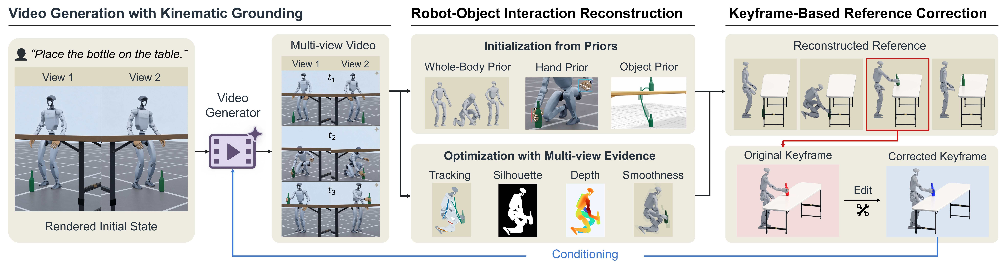

Abstract
We present KinoGen, a framework that synthesizes customizable humanoid loco-manipulation references through kinematically grounded video generation. KinoGen conditions a pretrained video generator on calibrated renders of the target robot and object in a simulated task instance and recovers the reference by fitting the same models to the generated two-view video, so that the reference lies in the robot configuration space by construction without a human body proxy or retargeting. Body, hand, and object priors initialize the reconstruction, and direct optimization against cross-view evidence refines it. Since an edited keyframe is simply another rendered state, a user can prescribe a goal object pose, regenerate the video around the edited keyframe, and obtain a reference that satisfies the pose exactly. Across eight loco-manipulation tasks, KinoGen yields lower penetration and foot skating than video-based baselines and preserves over 90% of annotated contacts, and its customized references satisfy every prescribed target with substantially less penetration than direct interpolation. Tracking policies trained on the synthesized references are deployed on a Unitree G1 with dexterous hands.
KinoGen: Customizable Humanoid Loco-Manipulation References via Kinematically Grounded Video Generation
KinoGen couples a pretrained video generator with a physics simulator by using the same robot, object, scene, and calibrated cameras. Whole-body, hand, and object priors initialize reconstruction, while optimization against multi-view evidence recovers the complete robot-object interaction. To further customize the reference, KinoGen edits a keyframe to match a user-specified object pose, then regenerates the surrounding motion so that the final reference exactly satisfies the prescribed configuration.

Robot–Object Interaction Reconstruction
KinoGen reconstructs synchronized whole-body, hand, and object trajectories directly in the target (customized?) configuration space.
Floor Mopping
Box Lifting to Shelf
Basket Lifting
Dumbbell Lifting
Bottle Placement
TODO
Kneeling & Reaching
TODO
Chair Lifting
TODO
Basketball Lifting
TODO
Tennisball lifting
TODO
Chair sitting
TODO
Barbell lifting
Keyframe-Based Reference Correction
The user edits the desired bottle pose in simulation. KinoGen conditions the video generator on that keyframe, regenerates a keyframe-conditioned video, and reconstructs the robot-object trajectory which satisfies the configuration. The full method reaches the goal pose exactly while avoiding table penetration caused by direct interpolation.
Video from Fig 6.
KinoGen with Correction
The generated reference conditioned on the corrected keyframe reaches the target exactly.
Video from Fig 6.
KinoGen without Correction
Without keyframe-based correction, KinoGen can miss the prescribed target.
Video from Fig 6.
End-Effector Interpolation
With direct interpolation, the endpoint is exact, but the hand and bottle penetrate the table.
Real-World Deployment
Tracking policies trained on reconstructed references execute whole-body tasks on a Unitree G1 equipped with dexterous hands.
TODO
Stool Sitting
TODO
Chair Lifting
TODO
Basketball Lifting
TODO